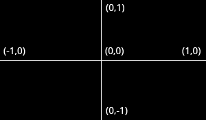
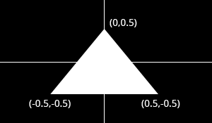

OpenGL
OpenGL® is the industry’s most widely adopted 2D and 3D graphics API, powering thousands of applications across a variety of computing platforms.
It is independent of windowing systems and operating systems, and is also network-transparent.
OpenGL
OpenGL enables developers to create high-performance, visually compelling graphics applications on platforms ranging from PCs to supercomputers, across fields like CAD, content creation, energy, entertainment, game development, manufacturing, medical imaging, and virtual reality.
OpenGL gives developers full access to the latest features of modern graphics hardware.
Core Profile vs Immediate Mode
In the early days of OpenGL, development was done using the fixed function pipeline, also known as immediate mode. This was an easy method for drawing graphics but lacked flexibility.
Much of OpenGL's inner workings were hidden, limiting developers' control over how graphics were processed.
Core Profile vs Immediate Mode
As developers sought more flexibility, OpenGL's specifications evolved, giving developers more control over graphics rendering.
While immediate mode was easy to learn, it was also very inefficient, leading to its eventual deprecation.
Since version 3.2, OpenGL began deprecating immediate mode in favor of the more efficient core profile, which requires the use of modern practices and removes outdated functionality.
When developing with the core profile, using deprecated functions results in errors and no rendering.
Although the modern approach is more challenging to learn, it offers significantly more flexibility and efficiency, helping developers gain a deeper understanding of graphics programming.
Our classes focus on Core Profile OpenGL (version 3.3) because mastering this approach is well worth the effort.
Creating a Window and an OpenGL Context
Before drawing anything, you need to initialize OpenGL by creating an OpenGL context. This context is a state machine that stores all rendering-related data for your application.
When the application closes, the OpenGL context is destroyed, cleaning up all resources.
Creating a window and OpenGL context isn’t specified in OpenGL, so the process differs across platforms.
OpenGL is designed for portability, so developers often use libraries that abstract this process, ensuring compatibility across different platforms.
While various libraries exist, they generally follow a similar flow: you first define window properties like title and size, as well as OpenGL context properties such as anti-aliasing settings.
Your application will then start the event loop, handling tasks like processing window events (e.g., mouse clicks), updating rendering state, and drawing objects.
Normalized Device Coordinates (NDC)
Normalized Device Coordinates (NDC)
Setup
Windows: Add opengl32.lib to your linker.
Linux: Add -IGL to your compiler options.
OS X: Add -framework OpenGL to your compiler options.
SDL 2
#ifdef __APPLE__
#include <SDL2/SDL.h>
#elif _WIN32
#include <SDL.h>
#endif
int main(int argc, char** argv)
{
SDL_Init(SDL_INIT_VIDEO);
SDL_GL_SetAttribute(SDL_GL_CONTEXT_PROFILE_MASK, SDL_GL_CONTEXT_PROFILE_CORE);
SDL_GL_SetAttribute(SDL_GL_CONTEXT_MAJOR_VERSION, 3);
SDL_GL_SetAttribute(SDL_GL_CONTEXT_MINOR_VERSION, 2);
SDL_GL_SetAttribute(SDL_GL_STENCIL_SIZE, 8);
SDL_Window* window = SDL_CreateWindow("OpenGL", 100, 100, 800, 600, SDL_WINDOW_OPENGL);
SDL_GLContext context = SDL_GL_CreateContext(window);
SDL_Event windowEvent;
while (true)
{
if (SDL_PollEvent(&windowEvent))
{
if (windowEvent.type == SDL_QUIT) break;
}
SDL_GL_SwapWindow(window);
}
SDL_GL_DeleteContext(context);
SDL_DestroyWindow(window);
SDL_Quit();
return 0;
}OpenGL Context Creation
SDL_GL_SetAttribute(SDL_GL_CONTEXT_PROFILE_MASK, SDL_GL_CONTEXT_PROFILE_CORE);
SDL_GL_SetAttribute(SDL_GL_CONTEXT_MAJOR_VERSION, 3);
SDL_GL_SetAttribute(SDL_GL_CONTEXT_MINOR_VERSION, 2);
SDL_GL_SetAttribute(SDL_GL_STENCIL_SIZE, 8);
SDL_Window* window = SDL_CreateWindow("OpenGL", 100, 100, 800, 600, SDL_WINDOW_OPENGL);
SDL_GLContext context = SDL_GL_CreateContext(window);
GLAD
We’re not done yet! Because OpenGL is a specification, it’s up to the graphics driver manufacturers to implement it. However, the location of OpenGL functions may vary depending on the driver version.
This means OpenGL functions need to be queried at runtime, and stored for later use.
GLAD is an open-source library that handles all the tedious work of retrieving and managing these OpenGL function pointers for you.
You can configure GLAD through its web service to define and load all the relevant OpenGL functions for your specific version of OpenGL.
#include <glad/glad.h>// define the function's prototype
typedef void (*GL_GENBUFFERS) (GLsizei, GLuint*);
// find the function and assign it to a function pointer
GL_GENBUFFERS glGenBuffers = (GL_GENBUFFERS)SDL_GL_GetProcAddress("glGenBuffers");
// function can now be called as normal
unsigned int buffer;
glGenBuffers(1, &buffer);
printf("%u\n", buffer);
#include <iostream>
#include <glad/glad.h>
#ifdef __APPLE__
#include <SDL2/SDL.h>
#elif _WIN32
#include <SDL.h>
#endif
int main(int argc, char **argv)
{
SDL_Init(SDL_INIT_VIDEO);
SDL_GL_SetAttribute(SDL_GL_CONTEXT_PROFILE_MASK, SDL_GL_CONTEXT_PROFILE_CORE);
SDL_GL_SetAttribute(SDL_GL_CONTEXT_MAJOR_VERSION, 3);
SDL_GL_SetAttribute(SDL_GL_CONTEXT_MINOR_VERSION, 2);
SDL_GL_SetAttribute(SDL_GL_STENCIL_SIZE, 8);
SDL_Window* window = SDL_CreateWindow("OpenGL", 100, 100, 800, 600, SDL_WINDOW_OPENGL);
if(window == nullptr)
{
std::cout << "Failed to create SDL Window" << std::endl;
SDL_Quit();
return -1;
}
SDL_GLContext context = SDL_GL_CreateContext(window);
if(!gladLoadGLLoader((GLADloadproc)SDL_GL_GetProcAddress))
{
std::cout << "Failed to initialize GLAD" << std::endl;
SDL_Quit();
return -2;
}
SDL_Event windowEvent;
while (true)
{
if (SDL_PollEvent(&windowEvent))
{
if (windowEvent.type == SDL_QUIT) break;
}
glClearColor(0.2f, 0.3f, 0.3f, 1.0f);
glClear(GL_COLOR_BUFFER_BIT);
SDL_GL_SwapWindow(window);
}
SDL_GL_DeleteContext(context);
SDL_DestroyWindow(window);
SDL_Quit();
return 0;
}

The Graphics Pipeline

Vertex Shader
The vertex shader is the first programmable stage in the graphics pipeline. It processes individual vertices, applying transformations to convert 3D world coordinates into 2D screen coordinates.
This is where perspective transformations take place, projecting the 3D positions of vertices onto the 2D space of the screen.
Besides transforming the vertices, the vertex shader passes attributes such as color, texture coordinates, and normals down the pipeline.
Once the vertices are processed, the graphics card groups them into primitives — the basic building blocks of rendering. These primitives can be triangles, lines, or points.
There are additional drawing modes, such as triangle strips or line strips, which reduce the number of vertices needed by connecting primitives continuously, like forming a connected line or mesh.
Geometry Shader
The geometry shader, an optional stage, was introduced more recently. Unlike the vertex shader, the geometry shader can output more vertices than it receives as input.
It operates on entire primitives, such as triangles or lines, and can modify, discard, or generate new primitives.
This stage can be especially useful when you want to minimize data transfers between the CPU and GPU. For example, in voxel games, you can pass only the positions of vertices, and the geometry shader can generate cubes or other shapes at runtime.
Fragment Shader
After the vertices and primitives are processed, the fragment shader handles the per-pixel operations.
The rasterizer converts the visible parts of primitives into pixel-sized fragments. The interpolated attributes from the vertex shader (or geometry shader) are passed to the fragment shader for each fragment.
For instance, in a triangle, even though you only specified color at three vertices, the colors across the triangle’s surface are smoothly interpolated.
The fragment shader calculates the final color of each fragment by using inputs such as texture coordinates, lighting calculations, and more. It’s also responsible for performing advanced effects like lighting, shadowing, and texture mapping.
Additionally, the fragment shader can discard fragments, making certain parts of the shape transparent or see-through. This is especially useful when rendering objects like windows or glass.
The final output of the fragment shader is passed through depth and stencil testing stages, where the GPU determines which fragments should be visible based on depth or stencil rules.
The main takeaway from depth and stencil testing is that they allow the GPU to decide which fragments are visible based on their relative position. For example, a fragment of a triangle closer to the camera will obscure fragments from triangles farther away.
Hello Triangle
Vertex Input
To start drawing something, we first need to provide OpenGL with input vertex data.
OpenGL is a 3D graphics library, meaning all coordinates we specify are in 3D (x, y, and z coordinates).
However, OpenGL only processes 3D coordinates that are within a specific range:
- Coordinates must be between -1.0 and 1.0 on all three axes (x, y, and z) to be visible on the screen.
Coordinates within this normalized device coordinates (NDC) range are rendered on the screen, while those outside are discarded.
To render a triangle, we need to define three vertices with 3D positions:
float vertices[] = {
0.0f, 0.5f, // Vertex 1 (X, Y)
0.5f, -0.5f, // Vertex 2 (X, Y)
-0.5f, -0.5f // Vertex 3 (X, Y)
};Normalized Device Coordinates (NDC)
Once processed by the vertex shader, vertex coordinates are transformed into normalized device coordinates, where the x, y, and z values range from -1.0 to 1.0.
Any coordinates outside this range are clipped and not visible on the screen.
The following image illustrates the triangle in normalized device coordinates:

With the vertex data defined, we send it as input to the first process of the graphics pipeline: the vertex shader.
This involves creating memory on the GPU to store the vertex data, configuring OpenGL to interpret the memory, and specifying how the data is sent to the graphics card.
We use Vertex Buffer Objects (VBOs) to store a large number of vertices in the GPU’s memory. The advantage is that we can send large batches of data all at once, avoiding the overhead of sending one vertex at a time.
The vertex shader processes vertices directly from the GPU memory, making this process extremely fast.
VBOs are OpenGL objects, identified by unique IDs. We generate a buffer ID using the glGenBuffers function:
GLuint vbo;
glGenBuffers(1, &vbo); // Generate 1 bufferAfter generating the buffer, we bind it to the GL_ARRAY_BUFFER target:
glBindBuffer(GL_ARRAY_BUFFER, vbo);Once bound, any operations on GL_ARRAY_BUFFER will apply to this buffer.
We can now copy the vertex data into the buffer's memory using the glBufferData function:
glBufferData(GL_ARRAY_BUFFER, sizeof(vertices), vertices, GL_STATIC_DRAW);glBufferData takes the following arguments:
- The buffer target (in this case,
GL_ARRAY_BUFFER). - The size of the data being passed (using
sizeof(vertices)). - The actual vertex data to store in the buffer.
- A usage hint to tell the GPU how we intend to use this data (e.g.,
GL_STATIC_DRAW,GL_DYNAMIC_DRAW, orGL_STREAM_DRAW).
Since the vertex data will rarely change, we use GL_STATIC_DRAW for optimal performance.
Vertex Shader
The vertex shader processes each vertex and its attributes from the vertex buffer. Its role is to output the final vertex position in device coordinates and pass relevant data to the fragment shader.
#version 330 core
layout (location = 0) in vec2 position;
void main()
{
gl_Position = vec4(position, 0.0, 1.0);
}This GLSL (OpenGL Shading Language) shader takes a 2D position as input and sets the gl_Position to output the position in 3D space.
Fragment Shader
The fragment shader determines the color of each pixel (or fragment) that makes up the shapes drawn on the screen. For now, the fragment shader will output a fixed color:
#version 330 core
out vec4 outColor;
void main()
{
outColor = vec4(1.0f, 0.5f, 0.2f, 1.0f); // Orange color
}Compiling Shaders
To use shaders in OpenGL, we first need to compile them at runtime. Let's start with the vertex shader.
We write the vertex shader source code as a string, and OpenGL dynamically compiles it:
const char* vertexShaderSource = R"glsl(
#version 330 core
layout (location = 0) in vec2 position;
void main()
{
gl_Position = vec4(position, 0.0, 1.0);
}
)glsl";To compile the shader, we first create a shader object, attach the source code to it, and compile it:
GLuint vertexShader = glCreateShader(GL_VERTEX_SHADER); // Create a vertex shader
glShaderSource(vertexShader, 1, &vertexShaderSource, NULL); // Attach the shader source code
glCompileShader(vertexShader); // Compile the shaderIt's important to check whether the shader compiled successfully. If not, we can retrieve the error message using the following code:
GLint success;
char infoLog[512];
glGetShaderiv(vertexShader, GL_COMPILE_STATUS, &success);
if (!success)
{
glGetShaderInfoLog(vertexShader, 512, NULL, infoLog);
std::cout << "ERROR::SHADER::VERTEX::COMPILATION_FAILED\n" << infoLog << std::endl;
}The fragment shader is compiled in a similar manner:
const char* fragmentShaderSource = R"glsl(
#version 330 core
out vec4 outColor;
void main()
{
outColor = vec4(1.0f, 0.5f, 0.2f, 1.0f); // Orange color
}
)glsl";
GLuint fragmentShader = glCreateShader(GL_FRAGMENT_SHADER); // Create a fragment shader
glShaderSource(fragmentShader, 1, &fragmentShaderSource, NULL); // Attach the shader source code
glCompileShader(fragmentShader); // Compile the shaderSimilarly, you should check for errors after compiling the fragment shader:
glGetShaderiv(fragmentShader, GL_COMPILE_STATUS, &success);
if (!success)
{
glGetShaderInfoLog(fragmentShader, 512, NULL, infoLog);
std::cout << "ERROR::SHADER::FRAGMENT::COMPILATION_FAILED\n" << infoLog << std::endl;
}Linking Shaders into a Shader Program
After compiling the shaders, we need to link them into a shader program. First, create a program object:
GLuint shaderProgram = glCreateProgram();Next, attach the compiled vertex and fragment shaders to the program and link them:
glAttachShader(shaderProgram, vertexShader); // Attach the vertex shader
glAttachShader(shaderProgram, fragmentShader); // Attach the fragment shader
glLinkProgram(shaderProgram); // Link the shader programAgain, it's a good idea to check if linking was successful:
glGetProgramiv(shaderProgram, GL_LINK_STATUS, &success);
if (!success)
{
glGetProgramInfoLog(shaderProgram, 512, NULL, infoLog);
std::cout << "ERROR::SHADER::PROGRAM::LINKING_FAILED\n" << infoLog << std::endl;
}Once the shaders are linked into the program, we no longer need the individual shader objects, so they can be deleted:
glDeleteShader(vertexShader); // Delete the vertex shader
glDeleteShader(fragmentShader); // Delete the fragment shaderNow, the shaderProgram contains the linked shaders, and we can use it in our render loop by calling:
glUseProgram(shaderProgram);Linking Vertex Attributes
After creating the shaders, OpenGL needs to know how to interpret the vertex data in memory and how to link this data to the vertex shader's attributes.
This step involves linking the vertex data to the attributes declared in the vertex shader. In this case, we need to link the position attribute.
First, we define the vertex data (positions of the triangle) in an array:
float vertices[] = {
0.0f, 0.5f, // Vertex 1 (X, Y)
0.5f, -0.5f, // Vertex 2 (X, Y)
-0.5f, -0.5f // Vertex 3 (X, Y)
};
The position attribute is stored as two floating point values per vertex, representing the X and Y coordinates. We will link this data to the position attribute in the vertex shader.
The position data is stored as 32-bit (4 byte) floating point values.
Each position is composed of 2 of those values.
There is no space (or other values) between each set of 2 values. The values are tightly packed in the array.
The first value in the data is at the beginning of the buffer.
To link the vertex data to the vertex attribute, we use the glVertexAttribPointer function:
glVertexAttribPointer(0, 2, GL_FLOAT, GL_FALSE, 2 * sizeof(float), (void*)0);
glEnableVertexAttribArray(0);glVertexAttribPointer(0, 2, GL_FLOAT, GL_FALSE, 2 * sizeof(float), (void*)0);
glEnableVertexAttribArray(0);Let’s break down the parameters of glVertexAttribPointer:
- 0: The index of the vertex attribute. We specified the position attribute to have location 0 in the vertex shader using
layout (location = 0). - 2: The number of components per vertex attribute. Each position consists of two components: X and Y.
- GL_FLOAT: The data type of each component, which is
float.
glVertexAttribPointer(0, 2, GL_FLOAT, GL_FALSE, 2 * sizeof(float), (void*)0);
glEnableVertexAttribArray(0);- GL_FALSE: Whether the data should be normalized. We set this to false because the data is already in the correct format.
- 2 * sizeof(float): The stride, which specifies the byte offset between consecutive vertex attributes. Since each vertex consists of two floats (X and Y), the stride is
2 * sizeof(float). - (void*)0: The offset of the first component of the attribute in the array. Here, it is
0since the position attribute is the first data in the array.
After specifying the layout of the vertex data, we enable the vertex attribute at location 0 using:
glVertexAttribPointer(0, 2, GL_FLOAT, GL_FALSE, 2 * sizeof(float), (void*)0);
glEnableVertexAttribArray(0);Once linked, the vertex attribute configuration is stored in a Vertex Array Object (VAO). You only need to specify this configuration once, and OpenGL will remember it.
This setup ensures that when we render our objects, the vertex data is correctly linked to the position attribute in the vertex shader.
Vertex Array Object (VAO)
In OpenGL, a Vertex Array Object (VAO) stores the configuration of the vertex attributes and the buffers associated with them. This allows you to set up vertex attributes once and reuse them during rendering.
A VAO can be bound just like any buffer object, and any vertex attribute calls made after binding the VAO will be stored in it.
This is how we generate and bind a VAO:
GLuint vao;
glGenVertexArrays(1, &vao);
glBindVertexArray(vao);The glGenVertexArrays function generates a VAO, and glBindVertexArray makes it the current active VAO. All subsequent vertex attribute calls will be stored in this VAO.
Next, we bind the VBO and configure the vertex attributes as shown in the previous sections:
// 1. Bind the VAO
glBindVertexArray(vao);
// 2. Copy the vertex data into a VBO
glBindBuffer(GL_ARRAY_BUFFER, vbo);
glBufferData(GL_ARRAY_BUFFER, sizeof(vertices), vertices, GL_STATIC_DRAW);
// 3. Set up the vertex attribute pointers
glVertexAttribPointer(0, 2, GL_FLOAT, GL_FALSE, 2 * sizeof(float), (void*)0);
glEnableVertexAttribArray(0);At this point, we have stored the vertex data configuration (using VBO) and vertex attribute pointers (using glVertexAttribPointer) inside the VAO. Now, we can unbind the VAO to avoid accidentally modifying it:
glBindVertexArray(0);When we want to render an object, we simply bind the VAO, and OpenGL will automatically use the stored configuration:
// Bind the VAO before drawing
glBindVertexArray(vao);
glDrawArrays(GL_TRIANGLES, 0, 3);
glBindVertexArray(0);By binding the VAO, OpenGL automatically uses the associated vertex attributes and buffers. This allows you to efficiently switch between different objects by simply binding different VAOs.
The VAO stores the following information:
- Vertex attribute configurations such as
glVertexAttribPointercalls - Enabled/disabled state of vertex attributes via
glEnableVertexAttribArray - Which VBOs are associated with which vertex attributes
Important Note:
- In OpenGL's core profile, using a VAO is mandatory for rendering objects. Failing to bind a VAO will result in nothing being drawn.
In summary, the VAO encapsulates the state of all the vertex attribute configurations and buffer associations, allowing for efficient rendering of different objects by switching VAOs.
Drawing the Triangle
After configuring vertex and fragment shaders, we can now draw our triangle using the glDrawArrays function:
glUseProgram(shaderProgram);
glBindVertexArray(vao);
glDrawArrays(GL_TRIANGLES, 0, 3);The function draws 3 vertices starting at index 0 as a triangle.

Uniforms
We can also change the color of the triangle after compiling the shader by using uniforms, which are global variables available in shaders. Here's how we modify the triangle's color dynamically:
#version 330 core
uniform vec3 triangleColor;
out vec4 outColor;
void main()
{
outColor = vec4(triangleColor, 1.0);
}You can update the uniform value in your C++ code by retrieving the uniform location and setting its value with glUniform functions:
GLint uniColor = glGetUniformLocation(shaderProgram, "triangleColor");
glUniform3f(uniColor, 1.0f, 0.0f, 0.0f); // Red colorThis will change the triangle's color to red.

To make things a little more exciting, try varying the color with the time by doing something like this in your main loop:
int start = SDL_GetTicks();
[...]
int now = SDL_GetTicks();
float time = (now-start) / 1000.0f;
glUniform3f(uniColor, (sin(time * 4.0f) + 1.0f) / 2.0f, 0.0f, 0.0f);Adding Some more Colors
Although uniforms have their place, color is something we'd rather like to specify per corner of the triangle!
Let's add a color attribute to the vertices to accomplish this.
We'll first have to add the extra attributes to the vertex data.
Transparency isn't really relevant, so we'll only add the red, green and blue components:
float vertices[] = {
0.0f, 0.5f, 1.0f, 0.0f, 0.0f, // Vertex 1: Red
0.5f, -0.5f, 0.0f, 1.0f, 0.0f, // Vertex 2: Green
-0.5f, -0.5f, 0.0f, 0.0f, 1.0f // Vertex 3: Blue
};Then we have to change the vertex shader to take it as input and pass it to the fragment shader:
#version 330 core
in vec2 position;
in vec3 color;
out vec3 Color;
void main()
{
Color = color;
gl_Position = vec4(position, 0.0, 1.0);
}And Color is added as input to the fragment shader:
#version 330 core
in vec3 Color;
out vec4 outColor;
void main()
{
outColor = vec4(Color, 1.0);
}
Make sure that the output of the vertex shader and the input of the fragment shader have the same name, or the shaders will not be linked properly.
Now, we just need to alter the attribute pointer code a bit to accommodate for the new X, Y, R, G, B attribute order.
GLint posAttrib = glGetAttribLocation(shaderProgram, "position");
glEnableVertexAttribArray(posAttrib);
glVertexAttribPointer(posAttrib, 2, GL_FLOAT, GL_FALSE, 5 * sizeof(float), 0);
GLint colAttrib = glGetAttribLocation(shaderProgram, "color");
glEnableVertexAttribArray(colAttrib);
glVertexAttribPointer(colAttrib, 3, GL_FLOAT, GL_FALSE, 5 * sizeof(float), (void*)( 2 * sizeof(float)));
The fifth parameter is set to 5 * sizeof(float) now, because each vertex consists of 5 floating point attribute values.
The offset of 2 * sizeof(float) for the color attribute is there because each vertex starts with 2 floating point values for the position that it has to skip over.
Element Buffer Objects
Right now, the vertices are specified in the order in which they are drawn.
Suppose we want to draw a rectangle instead of a triangle.
We can draw a rectangle using two triangles (OpenGL mainly works with triangles).
This will generate the following set of vertices:
float vertices[] = {
// first triangle
0.5f, 0.5f, // top right
0.5f, -0.5f, // bottom right
-0.5f, 0.5f, // top left
// second triangle
0.5f, -0.5f, // bottom right
-0.5f, -0.5f, // bottom left
-0.5f, 0.5f // top left
};float vertices[] = {
// first triangle
0.5f, 0.5f, // top right
0.5f, -0.5f, // bottom right
-0.5f, 0.5f, // top left
// second triangle
0.5f, -0.5f, // bottom right
-0.5f, -0.5f, // bottom left
-0.5f, 0.5f // top left
};As you can see, there is some overlap on the vertices specified. We specify bottom right and top left twice!
This is an overhead of 50% since the same rectangle could also be specified with only 4 vertices, instead of 6.
This will only get worse as soon as we have more complex models that have over 1000s of triangles where there will be large chunks that overlap.
float vertices[] = {
// first triangle
0.5f, 0.5f, // top right
0.5f, -0.5f, // bottom right
-0.5f, 0.5f, // top left
// second triangle
0.5f, -0.5f, // bottom right
-0.5f, -0.5f, // bottom left
-0.5f, 0.5f // top left
};What would be a better solution is to store only the unique vertices and then specify the order at which we want to draw these vertices in.
In that case we would only have to store 4 vertices for the rectangle, and then just specify at which order we'd like to draw them.
An EBO is a buffer, just like a vertex buffer object, that stores indices that OpenGL uses to decide what vertices to draw.
This so called indexed drawing is exactly the solution to our problem.
To get started we first have to specify the (unique) vertices and the indices to draw them as a rectangle:
float vertices[] = {
0.5f, 0.5f, // top right
0.5f, -0.5f, // bottom right
-0.5f, -0.5f, // bottom left
-0.5f, 0.5f // top left
};
unsigned int indices[] = { // note that we start from 0!
0, 1, 3, // first triangle
1, 2, 3 // second triangle
};You can see that, when using indices, we only need 4 vertices instead of 6.
Next we need to create the element buffer object:
GLuint ebo;
glGenBuffers(1, &ebo);Similar to the VBO we bind the EBO and copy the indices into the buffer with glBufferData.
Also, just like the VBO we want to place those calls between a bind and an unbind call, although this time we specify GL_ELEMENT_ARRAY_BUFFER as the buffer type.
glBindBuffer(GL_ELEMENT_ARRAY_BUFFER, ebo);
glBufferData(GL_ELEMENT_ARRAY_BUFFER, sizeof(indices), indices, GL_STATIC_DRAW);Note that we're now giving GL_ELEMENT_ARRAY_BUFFER as the buffer target.
The last thing left to do is replace the glDrawArrays call with glDrawElements to indicate we want to render the triangles from an index buffer.
When using glDrawElements we're going to draw using indices provided in the element buffer object currently bound:
glBindBuffer(GL_ELEMENT_ARRAY_BUFFER, ebo);
glDrawElements(GL_TRIANGLES, 6, GL_UNSIGNED_INT, 0);The first argument specifies the mode we want to draw in, similar to glDrawArrays.
The second argument is the count or number of elements we'd like to draw.
We specified 6 indices so we want to draw 6 vertices in total.
The third argument is the type of the indices which is of type GL_UNSIGNED_INT.
glBindBuffer(GL_ELEMENT_ARRAY_BUFFER, ebo);
glDrawElements(GL_TRIANGLES, 6, GL_UNSIGNED_INT, 0);The last argument allows us to specify an offset in the EBO (or pass in an index array, but that is when you're not using element buffer objects), but we're just going to leave this at 0.
The glDrawElements function takes its indices from the EBO currently bound to the GL_ELEMENT_ARRAY_BUFFER target.
This means we have to bind the corresponding EBO each time we want to render an object with indices which seems again a bit cumbersome.
It just so happens that a vertex array object also keeps track of element buffer object bindings.
The element buffer object currently bound while a VAO is bound, is stored as the VAO's element buffer object.
Binding to a VAO thus also automatically binds its EBO.

Note:
- A VAO stores the glBindBuffer calls when the target is
GL_ELEMENT_ARRAY_BUFFER. - This also means it stores its unbind calls so make sure you don't unbind the element array buffer before unbinding your VAO, otherwise it doesn't have an EBO configured.
// ..:: Initialization code :: ..
// 1. bind Vertex Array Object
glBindVertexArray(VAO);
// 2. copy our vertices array in a vertex buffer for OpenGL to use
glBindBuffer(GL_ARRAY_BUFFER, VBO);
glBufferData(GL_ARRAY_BUFFER, sizeof(vertices), vertices, GL_STATIC_DRAW);
// 3. copy our index array in a element buffer for OpenGL to use
glBindBuffer(GL_ELEMENT_ARRAY_BUFFER, EBO);
glBufferData(GL_ELEMENT_ARRAY_BUFFER, sizeof(indices), indices, GL_STATIC_DRAW);
// 4. then set the vertex attributes pointers
glVertexAttribPointer(0, 2, GL_FLOAT, GL_FALSE, 2 * sizeof(float), (void*)0);
glEnableVertexAttribArray(0);
[...]
// ..:: Drawing code (in render loop) :: ..
glUseProgram(shaderProgram);
glBindVertexArray(VAO);
glDrawElements(GL_TRIANGLES, 6, GL_UNSIGNED_INT, 0)
glBindVertexArray(0);Wireframe Mode
To draw your triangles in wireframe mode, you can configure how OpenGL draws its primitives via glPolygonMode(GL_FRONT_AND_BACK, GL_LINE).
The first argument says we want to apply it to the front and back of all triangles and the second argument tells us to draw them as lines.
Any subsequent drawing calls will render the triangles in wireframe mode until we set it back to its default using glPolygonMode(GL_FRONT_AND_BACK, GL_FILL).